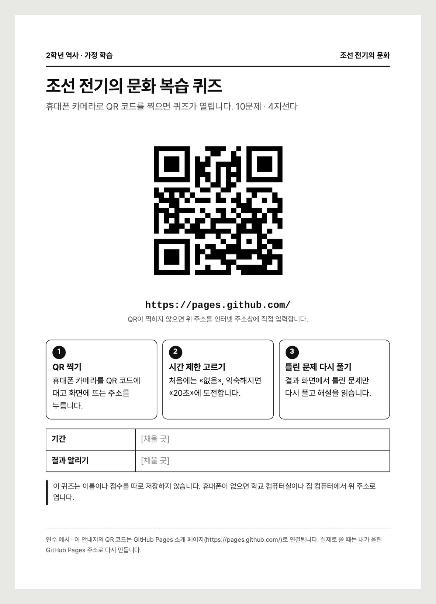

인터넷에 올리고 QR로 나누기
6·7차시에 만든 한 파일 웹페이지를 GitHub Pages 로 인터넷에 올리고, 학생에게 나눌 QR 코드와 A4 안내지를 만듭니다.
- 목표
- 7차시 복습 퀴즈를 GitHub Pages 주소로 공개하고, 그 주소를 담은 QR 코드와 학생 안내지를 만든다 (예시: 중학교 역사 — 조선 전기의 문화 복습 퀴즈)
- 준비물
- 7차시(또는 6차시)에 만든
index.html, GitHub 가입에 쓸 이메일 주소,클로드연수안에 만든8차시폴더 - 결과물
- ① 공개 주소
https://아이디.github.io/저장소이름/②qr.png③handout.html(A4 안내지) - 주의
- 공개 저장소는 누구나 봄 — 학생 정보·저작권 있는 자료는 올리지 않기 · noindex 는 검색만 막을 뿐
만든 파일을 USB로 옮기면 교실 PC에서만 열립니다. 인터넷에 올리면 학생이 집에서도 휴대폰으로 엽니다. 이 차시는 GitHub Pages를 씁니다. GitHub 의 무료 플랜(GitHub Free)에서도 공개 저장소라면 쓸 수 있습니다. 1~6번은 웹 브라우저의 GitHub 화면에서, 7번부터는 Code 탭에서 QR 코드와 안내지를 만듭니다. 기억할 것은 둘입니다. 올리는 순간 누구나 볼 수 있다는 것, 그리고 파일만 바꿔 올리면 주소와 QR은 그대로라는 것.
먼저 볼 영상

1 준비
클로드연수안에 빈 폴더8차시를 만들고, 7차시의index.html을 복사해 넣습니다(6차시 시뮬레이터도 됩니다). 파일 이름은 index.html 그대로 둡니다. 주소만 입력했을 때 처음 열리는 파일입니다.- 올릴 파일을 점검합니다. 학생 이름·사진·연락처·성적, 교과서 지문이나 남의 그림처럼 저작권 있는 자료가 없어야 합니다. 공개 저장소의 파일은 누구나 열어 보고 내려받을 수 있습니다. 페이지의
noindex표시는 검색 결과에 나오지 않게 요청할 뿐, 주소를 아는 사람은 누구나 엽니다. - 학교 PC라면 github.com 이 열리는지 먼저 확인합니다. 막혀 있으면 정보 담당 선생님께 문의하거나 개인 노트북으로 합니다.
2 따라 하기
번호 순서대로 진행합니다. 프롬프트가 필요한 단계에는 바로 아래에 복사 단추가 있습니다. [GitHub] 단계는 웹 브라우저에서 합니다. GitHub 화면은 영어로 나오고 자주 바뀌므로, 단추 이름이 다르면 화면 문구를 따릅니다.
- [GitHub] github.com 에서 Sign up 으로 가입합니다. 아이디(username)는 주소에 그대로 들어가므로(
https://아이디.github.io/…) 수업에 써도 괜찮은 이름으로 정합니다. 화면 안내에 따라 이메일 인증까지 마칩니다. 인증하지 않으면 사이트가 게시되지 않을 수 있습니다. - [GitHub] 오른쪽 위 + 를 눌러 New repository 를 고릅니다.
· 저장소 이름: 영어 소문자·숫자·하이픈으로 짓습니다. 예:history-quiz— 주소 끝에 들어갑니다.
· 공개 범위: Public. GitHub Free 에서는 공개 저장소만 Pages 를 쓸 수 있습니다.
· README 추가를 켜 두면 저장소가 빈 채로 시작하지 않아 다음 단계가 쉽습니다.
· 맨 아래 Create repository 를 누릅니다.캡처 넣을 곳 · L08-1
GitHub 의 새 저장소 만들기 화면 (따라 하기 2번).- 번호 표시: ① 저장소 이름 칸 ② Public ③ README 추가 ④ Create repository 단추
- 아이디·이메일 등 개인 정보는 가리기
- [GitHub] 저장소 화면에서 Add file → Upload files 를 누르고,
8차시/index.html을 화면에 끌어다 놓습니다. 아래쪽 단추로 저장(커밋)합니다. 단추 이름은 화면 문구를 따릅니다.웹 화면으로 올리는 파일은 한 파일에 25MiB까지, 한 번에 100개까지입니다. 한 파일짜리 HTML은 보통 이보다 훨씬 작습니다.
캡처 넣을 곳 · L08-2
파일 올리기 화면 (따라 하기 3번).- 빨간 상자: Add file 메뉴의 Upload files
- 번호 표시: ① 끌어다 놓은
index.html② 아래쪽 저장(커밋) 단추
- [GitHub] 저장소 위쪽의 Settings → 왼쪽 메뉴의 Pages 로 갑니다. Build and deployment 의 Source 에서 Deploy from a branch 를 고르고, 그 아래 Branch 에서 main 과 / (root) 를 고른 뒤 Save 를 누릅니다.
캡처 넣을 곳 · L08-3
Pages 설정 화면 (따라 하기 4번).- 빨간 상자: 왼쪽 메뉴의 Pages
- 번호 표시: ① Source — Deploy from a branch ② Branch — main ③ 폴더 — / (root) ④ Save
- [GitHub] 몇 분 기다립니다. 공식 문서는 반영까지 최대 10분이 걸릴 수 있다고 안내합니다. Pages 화면을 새로 고치면 위쪽에 사이트 주소와 Visit site 단추가 나옵니다. 주소는
https://아이디.github.io/저장소이름/꼴입니다.캡처 넣을 곳 · L08-4
배포된 주소 (따라 하기 5~6번).- 빨간 상자: 사이트 주소와 Visit site 단추
- 옆에 그 주소로 열린 게임 화면(휴대폰 화면이면 더 좋음)
- 아이디는 가려도 됨
- [GitHub] 주소를 눌러 게임이 열리는지 보고, 휴대폰에서도 주소를 입력해 엽니다. 주소를 메모해 둡니다.
- [Code 탭] 클로드 앱의 Code 탭에서 환경 Local, 폴더
클로드연수/8차시, 권한 모드 Manual 을 고릅니다(5차시 2~4번과 같습니다). - [Code 탭] 아래 프롬프트의 «주소» 줄을 내 주소로 바꿔 보냅니다. 파이썬이나 라이브러리를 설치하겠다고 물으면 무엇을 설치하는지 읽고 승인합니다.
GitHub Pages 에 올린 복습 퀴즈 게임의 주소로 QR 코드와 학생 안내지를 만들어 주세요. 주소: https://아이디.github.io/저장소이름/ ← 내 주소로 바꾸기 1. QR 코드 - 파이썬 qrcode 라이브러리로 qr.png 만들기 (흰 여백을 충분히, 인쇄해도 잘 찍히게) - 파이썬이나 라이브러리를 설치해야 하면, 설치하기 전에 무엇을 왜 설치하는지 먼저 알려 주기 - 만든 QR을 다시 읽어 주소가 맞는지 확인할 수 있으면 확인하고, 못 하면 못 했다고 알려 주기 2. 안내지 handout.html (A4 세로 한 장, 인쇄용) - 제목: 조선 전기의 문화 복습 퀴즈 / 대상: 2학년 - QR 코드를 크게, 그 아래에 주소를 글자로도 - 하는 방법 3단계: QR 찍기 → 시간 제한 고르기 → 틀린 문제 다시 풀기 - 기간과 결과 알리기 방법은 [채울 곳]으로 비워 두기 - qr.png 를 HTML 안에 넣어 이 파일 하나만 옮겨도 그림이 보이게 - 인터넷 없이 열리고, 인쇄할 때 흑백으로도 잘 보이게 (인쇄 단추는 인쇄할 때 숨기기) 다 만들면 앱 안 브라우저 창에서 열어 확인해 주세요.
«설치하기 전에 먼저 알려 주기»는 파이썬이 없는 컴퓨터를 위한 것입니다. «QR을 다시 읽어 확인»은 잘못된 주소가 인쇄되는 일을 막습니다. 수십 장을 다시 뽑지 않으려면 인쇄 전에 확인해야 합니다. «qr.png 를 HTML 안에 넣어»는 안내지 파일 하나만 옮겨도 그림이 빠지지 않게 합니다.
- [Code 탭] 대화창의
handout.html경로를 눌러 앱 안 브라우저 창에서 봅니다. 휴대폰 카메라로 화면의 QR을 찍어 내 주소가 열리는지 확인하고, 파일 탐색기에서 열어 Ctrl+P 인쇄 미리보기로 A4 한 장에 들어가는지 봅니다. - 게임을 고쳤다면 같은 이름(index.html)으로 Upload files 를 다시 합니다. 파일이 바뀌고 주소와 QR은 그대로입니다. 몇 분 뒤 반영되며, 휴대폰에서 예전 화면이 보이면 새로 고침합니다.
3 결과 예시

https://pages.github.com/)를 담았습니다. 휴대폰으로 찍으면 그 페이지가 열립니다. 실제로는 내 GitHub Pages 주소로 만듭니다.예시 안내지 직접 열어 보기 → · QR 그림 qr.png
https://pages.github.com/ 과 같은지 확인했습니다. 안내지는 클로드 앱 화면이 아니라 브라우저의 A4 인쇄 미리보기를 찍은 것입니다. GitHub 에 올리는 화면(따라 하기 2~5번)은 실제 계정으로 찍어야 해서 캡처 자리로 두었습니다. 클로드 코드의 실제 결과는 배치와 문구가 매번 다릅니다.4 검증 포인트
② QR — 인쇄한 종이를 휴대폰 두세 대로 찍어 봅니다. 너무 작게 인쇄하거나 흐리게 인쇄하면 찍히지 않습니다.
③ 공개 범위 — 저장소의 파일 목록을 다시 보고 학생 정보·저작권 자료·연습용 파일이 없는지 확인합니다. 파일 목록도 누구나 봅니다.
④ 안내지 — 주소 글자가 QR에 담긴 주소와 같은지, [채울 곳]을 모두 채웠는지 봅니다.
⑤ 고친 뒤 — 다시 올린 다음 몇 분 뒤 새로 고쳐 바뀐 내용이 보이는지 봅니다.
⑥ 입력 받기 — 올린 페이지가 학생에게 이름·연락처·비밀번호를 입력하게 하지 않는지 봅니다. GitHub 도 Pages 를 비밀번호 같은 민감한 정보를 주고받는 데 쓰지 말라고 안내합니다.
5 다른 교과에 적용하기
따라 하기 8단계 프롬프트 1 대신 아래 교과 프롬프트를 씁니다. GitHub 에 올리는 1~6단계는 같습니다. 프롬프트의 «주소» 줄을 내 GitHub Pages 주소로 바꾸고, 질문·순서처럼 필요한 내용은 프롬프트 아래에 붙여 넣습니다. 교과마다 무엇을 올려 어떻게 나눌지를 다르게 했습니다. 주소가 여러 개인 사례(체육·진로)는 페이지마다 저장소를 하나씩 만들거나, 한 저장소에 파일 이름을 달리해 올립니다(예: …/저장소이름/soccer.html).
과학시뮬레이터 모둠 카드6차시 시뮬레이터 → 모둠 책상에 붙일 작은 QR 카드 8장
GitHub Pages 에 올린 달의 위상 변화 시뮬레이터(6차시)의 주소로 QR 코드와 인쇄물을 만들어 주세요. 주소: https://아이디.github.io/저장소이름/ ← 내 주소로 바꾸기 1. QR 코드 - 파이썬 qrcode 라이브러리로 qr.png 만들기 (흰 여백을 충분히, 인쇄해도 잘 찍히게) - 설치가 필요하면 설치하기 전에 무엇을 왜 설치하는지 먼저 알려 주기 - 만든 QR을 다시 읽어 주소가 맞는지 확인할 수 있으면 확인하고, 못 하면 못 했다고 알려 주기 2. qr_cards.html (A4 한 장에 카드 8장, 자르는 선 포함) - 카드마다 QR, 짧은 주소, 모둠 번호(1~8) - 카드마다 활동 질문 1개 (질문은 아래에 붙인 것만) - 카드 크기는 가로 약 9cm, 세로 약 6cm - QR 그림을 HTML 안에 넣어 이 파일 하나만 옮겨도 그림이 보이게 - 인터넷 없이 열리고, 인쇄할 때 흑백으로도 잘 보이게 - 모르는 내용은 지어내지 말고 [채울 곳]으로 남기기 다 만들면 앱 안 브라우저 창에서 열어 확인해 주세요. [여기에 내용 붙여 넣기]
역사복습 주간 게시물7차시 퀴즈 → 교실 게시판에 붙일 A4 가로 포스터
GitHub Pages 에 올린 조선 전기의 문화 복습 퀴즈(7차시)의 주소로 QR 코드와 인쇄물을 만들어 주세요. 주소: https://아이디.github.io/저장소이름/ ← 내 주소로 바꾸기 1. QR 코드 - 파이썬 qrcode 라이브러리로 qr.png 만들기 (흰 여백을 충분히, 인쇄해도 잘 찍히게) - 설치가 필요하면 설치하기 전에 무엇을 왜 설치하는지 먼저 알려 주기 - 만든 QR을 다시 읽어 주소가 맞는지 확인할 수 있으면 확인하고, 못 하면 못 했다고 알려 주기 2. poster.html (A4 가로 한 장, 교실 게시용) - 큰 제목과 큰 QR, 주소 글자 - «쉬는 시간에 찍어 보세요» 같은 한 줄 안내 - 복습 기간은 [채울 곳] - QR 그림을 HTML 안에 넣어 이 파일 하나만 옮겨도 그림이 보이게 - 인터넷 없이 열리고, 인쇄할 때 흑백으로도 잘 보이게 - 모르는 내용은 지어내지 말고 [채울 곳]으로 남기기 다 만들면 앱 안 브라우저 창에서 열어 확인해 주세요.
국어학급 문고 책 띠지독서 안내 페이지 → 책장에 붙일 QR 띠지
GitHub Pages 에 올린 한 학기 한 권 읽기 안내 페이지의 주소로 QR 코드와 인쇄물을 만들어 주세요. 주소: https://아이디.github.io/저장소이름/ ← 내 주소로 바꾸기 1. QR 코드 - 파이썬 qrcode 라이브러리로 qr.png 만들기 (흰 여백을 충분히, 인쇄해도 잘 찍히게) - 설치가 필요하면 설치하기 전에 무엇을 왜 설치하는지 먼저 알려 주기 - 만든 QR을 다시 읽어 주소가 맞는지 확인할 수 있으면 확인하고, 못 하면 못 했다고 알려 주기 2. labels.html (A4 한 장에 가로 띠지 여러 개) - 띠지마다 작은 QR과 «읽기 안내 보기» 글자 - 띠지 크기는 가로 약 18cm, 세로 약 3cm - 자르는 선 포함 - QR 그림을 HTML 안에 넣어 이 파일 하나만 옮겨도 그림이 보이게 - 인터넷 없이 열리고, 인쇄할 때 흑백으로도 잘 보이게 - 모르는 내용은 지어내지 말고 [채울 곳]으로 남기기 다 만들면 앱 안 브라우저 창에서 열어 확인해 주세요.
수학학습지 귀퉁이 QR공식 정리 페이지 → 학습지에 붙일 작은 QR 스티커
GitHub Pages 에 올린 일차함수 공식 정리 페이지의 주소로 QR 코드와 인쇄물을 만들어 주세요. 주소: https://아이디.github.io/저장소이름/ ← 내 주소로 바꾸기 1. QR 코드 - 파이썬 qrcode 라이브러리로 qr.png 만들기 (흰 여백을 충분히, 인쇄해도 잘 찍히게) - 설치가 필요하면 설치하기 전에 무엇을 왜 설치하는지 먼저 알려 주기 - 만든 QR을 다시 읽어 주소가 맞는지 확인할 수 있으면 확인하고, 못 하면 못 했다고 알려 주기 2. stickers.html (A4 한 장에 3열 8줄) - 칸마다 작은 QR과 «공식 정리» 글자 - 칸 크기와 여백: [가진 라벨지의 칸 크기를 적기] - 휴대폰 카메라로 찍힐 만한 가장 작은 크기를 알려 주기 - QR 그림을 HTML 안에 넣어 이 파일 하나만 옮겨도 그림이 보이게 - 인터넷 없이 열리고, 인쇄할 때 흑백으로도 잘 보이게 - 모르는 내용은 지어내지 말고 [채울 곳]으로 남기기 다 만들면 앱 안 브라우저 창에서 열어 확인해 주세요.
영어가정 학습 안내지단어장 페이지 → 집에서 외우기 안내지
GitHub Pages 에 올린 이번 단원 단어장 페이지의 주소로 QR 코드와 인쇄물을 만들어 주세요. 주소: https://아이디.github.io/저장소이름/ ← 내 주소로 바꾸기 1. QR 코드 - 파이썬 qrcode 라이브러리로 qr.png 만들기 (흰 여백을 충분히, 인쇄해도 잘 찍히게) - 설치가 필요하면 설치하기 전에 무엇을 왜 설치하는지 먼저 알려 주기 - 만든 QR을 다시 읽어 주소가 맞는지 확인할 수 있으면 확인하고, 못 하면 못 했다고 알려 주기 2. handout.html (A4 세로 한 장) - QR 코드를 크게, 아래에 주소 글자 - 집에서 하는 방법 3단계 (뜻 가리고 외우기 → 소리 내어 읽기 → 짝과 확인) - 보호자께 드리는 한 줄 안내 - QR 그림을 HTML 안에 넣어 이 파일 하나만 옮겨도 그림이 보이게 - 인터넷 없이 열리고, 인쇄할 때 흑백으로도 잘 보이게 - 모르는 내용은 지어내지 말고 [채울 곳]으로 남기기 다 만들면 앱 안 브라우저 창에서 열어 확인해 주세요.
사회가정통신문에 붙일 QR 상자현장체험학습 안내 → 한글 가정통신문에 붙여 넣을 그림
GitHub Pages 에 올린 현장체험학습 안내 페이지의 주소로 QR 코드와 가정통신문에 붙일 그림을 만들어 주세요. 주소: https://아이디.github.io/저장소이름/ ← 내 주소로 바꾸기 1. QR 코드 - 파이썬 qrcode 라이브러리로 qr.png 만들기 (흰 여백을 충분히, 인쇄해도 잘 찍히게) - 설치가 필요하면 설치하기 전에 무엇을 왜 설치하는지 먼저 알려 주기 - 만든 QR을 다시 읽어 주소가 맞는지 확인할 수 있으면 확인하고, 못 하면 못 했다고 알려 주기 2. qr_box.png (가로 약 8cm 그림, 한글 문서에 붙여 넣기용) - QR 코드 옆에 «자세한 일정은 QR로» 글자와 주소 - 흰 바탕, 검은 테두리 - qr_box.png 를 보여 주는 확인용 qr_box.html 도 함께 - QR 그림을 HTML 안에 넣어 이 파일 하나만 옮겨도 그림이 보이게 - 인터넷 없이 열리고, 인쇄할 때 흑백으로도 잘 보이게 - 모르는 내용은 지어내지 말고 [채울 곳]으로 남기기 다 만들면 앱 안 브라우저 창에서 열어 확인해 주세요.
도덕모둠 활동지 머리띠토론 자료 페이지 → 활동지 맨 위에 넣을 QR 띠
GitHub Pages 에 올린 학급 토론 자료 모음 페이지의 주소로 QR 코드와 인쇄물을 만들어 주세요. 주소: https://아이디.github.io/저장소이름/ ← 내 주소로 바꾸기 1. QR 코드 - 파이썬 qrcode 라이브러리로 qr.png 만들기 (흰 여백을 충분히, 인쇄해도 잘 찍히게) - 설치가 필요하면 설치하기 전에 무엇을 왜 설치하는지 먼저 알려 주기 - 만든 QR을 다시 읽어 주소가 맞는지 확인할 수 있으면 확인하고, 못 하면 못 했다고 알려 주기 2. strips.html (A4 한 장에 가로 띠 4개) - 띠마다 QR, 토론 주제, 모둠 이름 칸 - 토론 주제는 아래에 붙인 것만 - 자르는 선 포함 - QR 그림을 HTML 안에 넣어 이 파일 하나만 옮겨도 그림이 보이게 - 인터넷 없이 열리고, 인쇄할 때 흑백으로도 잘 보이게 - 모르는 내용은 지어내지 말고 [채울 곳]으로 남기기 다 만들면 앱 안 브라우저 창에서 열어 확인해 주세요. [여기에 내용 붙여 넣기]
기술·가정실습실 벽 포스터안전 수칙 페이지 → 실습실 벽에 붙일 큰 QR 포스터
GitHub Pages 에 올린 조리 실습 안전 수칙 페이지의 주소로 QR 코드와 인쇄물을 만들어 주세요. 주소: https://아이디.github.io/저장소이름/ ← 내 주소로 바꾸기 1. QR 코드 - 파이썬 qrcode 라이브러리로 qr.png 만들기 (흰 여백을 충분히, 인쇄해도 잘 찍히게) - 설치가 필요하면 설치하기 전에 무엇을 왜 설치하는지 먼저 알려 주기 - 만든 QR을 다시 읽어 주소가 맞는지 확인할 수 있으면 확인하고, 못 하면 못 했다고 알려 주기 2. poster.html (A4 세로 한 장) - 아주 큰 QR, «실습 전에 꼭 읽어요» 제목 - 가장 중요한 수칙 3개는 포스터에도 글자로 (아래에 붙인 수칙에서 고르기) - 멀리서도 읽히는 큰 글자 - QR 그림을 HTML 안에 넣어 이 파일 하나만 옮겨도 그림이 보이게 - 인터넷 없이 열리고, 인쇄할 때 흑백으로도 잘 보이게 - 모르는 내용은 지어내지 말고 [채울 곳]으로 남기기 다 만들면 앱 안 브라우저 창에서 열어 확인해 주세요. [여기에 내용 붙여 넣기]
정보수업 시작 화면수행평가 안내 → 교실 TV에 띄울 큰 QR 화면
GitHub Pages 에 올린 수행평가 안내 페이지의 주소로 QR 코드와 교실 TV 화면을 만들어 주세요. 주소: https://아이디.github.io/저장소이름/ ← 내 주소로 바꾸기 1. QR 코드 - 파이썬 qrcode 라이브러리로 qr.png 만들기 (흰 여백을 충분히, 인쇄해도 잘 찍히게) - 설치가 필요하면 설치하기 전에 무엇을 왜 설치하는지 먼저 알려 주기 - 만든 QR을 다시 읽어 주소가 맞는지 확인할 수 있으면 확인하고, 못 하면 못 했다고 알려 주기 2. screen.html (16:9 전체 화면, 교실 TV용) - 화면 가운데 아주 큰 QR, 아래에 짧은 주소 - «휴대폰 카메라로 찍어 안내를 읽어요» 한 줄 - F11 전체 화면에서 스크롤 없이 한 화면 - QR 그림을 HTML 안에 넣어 이 파일 하나만 옮겨도 그림이 보이게 - 인터넷 없이 열리고, 인쇄할 때 흑백으로도 잘 보이게 - 모르는 내용은 지어내지 말고 [채울 곳]으로 남기기 다 만들면 앱 안 브라우저 창에서 열어 확인해 주세요.
음악합창 대회 순서지합창 대회 안내 → 관객에게 나눌 순서지
GitHub Pages 에 올린 학급 합창 대회 안내 페이지의 주소로 QR 코드와 인쇄물을 만들어 주세요. 주소: https://아이디.github.io/저장소이름/ ← 내 주소로 바꾸기 1. QR 코드 - 파이썬 qrcode 라이브러리로 qr.png 만들기 (흰 여백을 충분히, 인쇄해도 잘 찍히게) - 설치가 필요하면 설치하기 전에 무엇을 왜 설치하는지 먼저 알려 주기 - 만든 QR을 다시 읽어 주소가 맞는지 확인할 수 있으면 확인하고, 못 하면 못 했다고 알려 주기 2. program.html (A4 한 장에 A5 순서지 2장) - 순서지마다 대회 순서표와 QR - 순서와 곡명은 아래에 붙인 것만 - 가운데 자르는 선 - QR 그림을 HTML 안에 넣어 이 파일 하나만 옮겨도 그림이 보이게 - 인터넷 없이 열리고, 인쇄할 때 흑백으로도 잘 보이게 - 모르는 내용은 지어내지 말고 [채울 곳]으로 남기기 다 만들면 앱 안 브라우저 창에서 열어 확인해 주세요. [여기에 내용 붙여 넣기]
미술온라인 전시 안내판전시회 안내 → 전시장 입구 QR 안내판
GitHub Pages 에 올린 학년 작품 전시회 안내 페이지의 주소로 QR 코드와 인쇄물을 만들어 주세요. 주소: https://아이디.github.io/저장소이름/ ← 내 주소로 바꾸기 1. QR 코드 - 파이썬 qrcode 라이브러리로 qr.png 만들기 (흰 여백을 충분히, 인쇄해도 잘 찍히게) - 설치가 필요하면 설치하기 전에 무엇을 왜 설치하는지 먼저 알려 주기 - 만든 QR을 다시 읽어 주소가 맞는지 확인할 수 있으면 확인하고, 못 하면 못 했다고 알려 주기 2. sign.html (A4 가로 한 장) - 큰 QR과 «온라인으로도 관람하세요» 제목 - 관람 예절 3가지 - 학생 이름이나 작품 사진은 넣지 않기 - QR 그림을 HTML 안에 넣어 이 파일 하나만 옮겨도 그림이 보이게 - 인터넷 없이 열리고, 인쇄할 때 흑백으로도 잘 보이게 - 모르는 내용은 지어내지 말고 [채울 곳]으로 남기기 다 만들면 앱 안 브라우저 창에서 열어 확인해 주세요.
체육종목별 규칙 QR 게시물종목마다 다른 페이지 → QR 3개를 한 장에
GitHub Pages 에 올린 종목별 경기 규칙 페이지 3개의 주소로 QR 코드와 게시물을 만들어 주세요. 주소 목록: 아래에 «종목 | 주소» 줄로 붙입니다 1. QR 코드 - 주소마다 파이썬 qrcode 라이브러리로 QR 그림 만들기 (qr_1.png, qr_2.png …, 흰 여백 충분히) - 설치가 필요하면 설치하기 전에 무엇을 왜 설치하는지 먼저 알려 주기 - 만든 QR을 하나씩 다시 읽어 주소와 짝이 맞는지 확인할 수 있으면 확인하고, 못 하면 못 했다고 알려 주기 2. board.html (A4 세로 한 장에 QR 3개) - 종목마다 QR, 종목 이름, 주소 글자 - 주소와 종목의 짝은 아래에 붙인 목록 그대로 - QR끼리 충분히 떨어뜨리기 (옆 QR이 함께 찍히지 않게) - QR 그림을 HTML 안에 넣어 이 파일 하나만 옮겨도 그림이 보이게 - 인터넷 없이 열리고, 인쇄할 때 흑백으로도 잘 보이게 - 모르는 내용은 지어내지 말고 [채울 곳]으로 남기기 다 만들면 앱 안 브라우저 창에서 열어 확인해 주세요. [여기에 내용 붙여 넣기]
진로체험 부스 안내판부스별 페이지 → 부스마다 다른 QR 6개
GitHub Pages 에 올린 진로 체험의 날 부스별 안내 페이지 6개의 주소로 QR 코드와 안내판을 만들어 주세요. 주소 목록: 아래에 «부스 이름 | 장소 | 주소» 줄로 붙입니다 1. QR 코드 - 주소마다 파이썬 qrcode 라이브러리로 QR 그림 만들기 (qr_1.png, qr_2.png …, 흰 여백 충분히) - 설치가 필요하면 설치하기 전에 무엇을 왜 설치하는지 먼저 알려 주기 - 만든 QR을 하나씩 다시 읽어 주소와 짝이 맞는지 확인할 수 있으면 확인하고, 못 하면 못 했다고 알려 주기 2. booths.html (A4 한 장에 부스 안내 6칸) - 칸마다 부스 이름, 장소, QR - 주소와 부스의 짝은 아래에 붙인 목록 그대로 - 자르는 선 포함 - QR 그림을 HTML 안에 넣어 이 파일 하나만 옮겨도 그림이 보이게 - 인터넷 없이 열리고, 인쇄할 때 흑백으로도 잘 보이게 - 모르는 내용은 지어내지 말고 [채울 곳]으로 남기기 다 만들면 앱 안 브라우저 창에서 열어 확인해 주세요. [여기에 내용 붙여 넣기]
담임학부모 총회 안내지학급 안내 페이지(5차시) → 학부모께 드릴 안내지
GitHub Pages 에 올린 학급 안내 페이지(5차시)의 주소로 QR 코드와 인쇄물을 만들어 주세요. 주소: https://아이디.github.io/저장소이름/ ← 내 주소로 바꾸기 1. QR 코드 - 파이썬 qrcode 라이브러리로 qr.png 만들기 (흰 여백을 충분히, 인쇄해도 잘 찍히게) - 설치가 필요하면 설치하기 전에 무엇을 왜 설치하는지 먼저 알려 주기 - 만든 QR을 다시 읽어 주소가 맞는지 확인할 수 있으면 확인하고, 못 하면 못 했다고 알려 주기 2. parents.html (A4 세로 한 장) - QR과 주소, «매주 같은 주소에서 새 소식을 봅니다» 안내 - 학급 안내 페이지에서 볼 수 있는 것 3가지 - 학생·학부모 개인 정보는 넣지 않기 - QR 그림을 HTML 안에 넣어 이 파일 하나만 옮겨도 그림이 보이게 - 인터넷 없이 열리고, 인쇄할 때 흑백으로도 잘 보이게 - 모르는 내용은 지어내지 말고 [채울 곳]으로 남기기 다 만들면 앱 안 브라우저 창에서 열어 확인해 주세요.
GitHub Pages 는 저장소의 파일을 그대로 웹 주소로 보여 줍니다. 그래서 올리는 것이 곧 공개하는 것입니다. 한 파일짜리 HTML은 그대로 올리면 되고, 고칠 때는 같은 이름으로 다시 올리면 주소와 QR은 그대로입니다. QR과 안내지는 주소를 학생에게 건네는 다리이므로, 인쇄하기 전에 반드시 직접 찍어 봅니다.
· 주소를 열면 404 가 뜬다 — 몇 분 더 기다립니다. 파일 이름이
index.html 인지, 폴더 안이 아니라 저장소 맨 위에 있는지 확인합니다.· Pages 를 켤 수 없다는 안내가 나온다 — 저장소가 비공개(Private)일 수 있습니다. GitHub Free 에서는 공개 저장소만 Pages 를 쓸 수 있습니다. 새 공개 저장소를 만들어 다시 올립니다.
· Add file 메뉴가 없다 — 빈 저장소 화면입니다. 화면 안의 파일 올리기 링크를 누릅니다(화면 문구를 따릅니다).
· 고쳐 올렸는데 예전 화면이 보인다 — 몇 분 뒤 새로 고침합니다. 휴대폰은 브라우저를 닫았다 다시 엽니다.
· 학교망에서 github.io 가 열리지 않는다 — 정보 담당 선생님께 문의합니다. 학생 안내지에 «학교 와이파이에서 안 열리면 데이터로»를 넣어 둡니다.
· 파이썬이 없다고 한다 — 개인 노트북이면 클로드가 안내하는 대로 python.org 에서 설치한 뒤 다시 요청합니다. 학교 PC는 설치가 막힐 수 있으니 개인 노트북에서 QR과 안내지만 만들어 옮깁니다.
· 사이트를 내리고 싶다 — Pages 설정에서 게시를 멈추거나 저장소를 지웁니다(단추 이름은 화면 문구를 따릅니다). 저장소를 지우면 되돌릴 수 없습니다.
· GitHub 말고 다른 방법 — Vercel 같은 배포 서비스도 있습니다. 아래 «더 보기» 영상이 Vercel 로 공개하는 과정을 다룹니다.
더 보기

출처: GitHub Docs What is GitHub Pages? · Creating a GitHub Pages site · Configuring a publishing source · Quickstart for GitHub Pages · Adding a file to a repository · GitHub Pages limits · GitHub’s plans (2026-11-11 확인). Claude Code 문서 Use Claude Code Desktop.